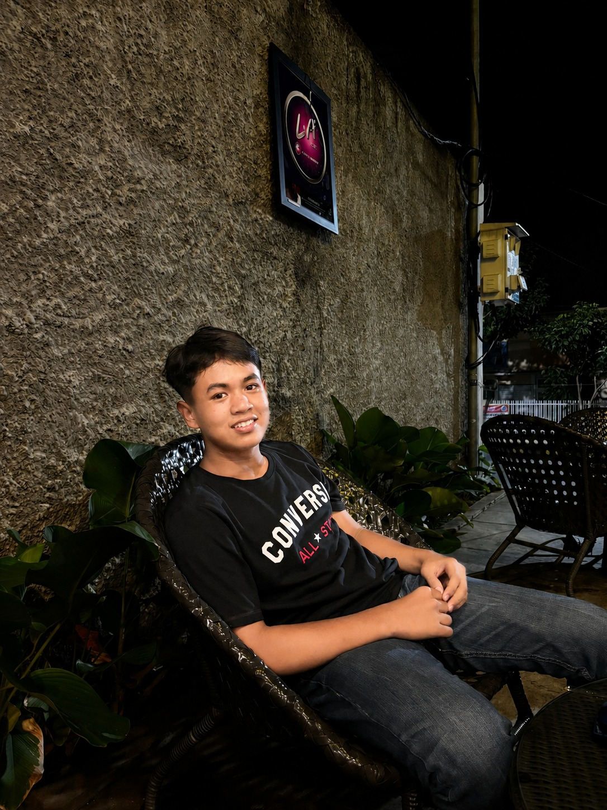

Aplikasi transportasi yang dirancang berdasarkan riset pengguna untuk membantu perjalanan sehari-hari melalui pemesanan transportasi, makanan, penjadwalan perjalanan, serta fitur keamanan seperti Share Location dan SOS Darurat.
Pengguna transportasi online punya masalah yang lebih nyata dari sekadar susah memesan. Riset menunjukkan keluhan mereka menyentuh hal-hal mendasar: tidak merasa aman di jalan, akurasi informasi waktu dan ketepatan waktu.
Wawancara dan observasi lapangan memperlihatkan pola yang cukup jelas. Pengguna perempuan paling sering menyebut rasa tidak aman. Estimasi waktu meleset, kadang jauh. Informasi kendaraan dan posisi driver lebih sering membingungkan daripada menenangkan. Satu hal lain yang muncul berulang: pengguna tidak mau diperlakukan sama rata, mereka punya situasi yang berbeda-beda dan ingin layanan yang tahu itu.
Untuk memahami kebutuhan dan permasalahan pengguna, dilakukan wawancara mendalam terhadap beberapa pengguna aktif transportasi online dengan latar belakang dan kebutuhan yang berbeda.
Berdasarkan hasil empati, mendefinisikan masalah inti dan merumuskan peluang solusi yang terukur dan dapat dieksekusi.
Eksplorasi ide solusi dari brainstorming kasar hingga arsitektur aplikasi yang matang dan siap diprototiping.
8 ide sketsa dalam 8 menit — mendorong kreativitas cepat dan diversitas solusi yang beragam sebelum masuk ke wireframe.
Sketsa dengan tingkat keakuratan rendah untuk memvalidasi konsep awal sebelum masuk ke desain tinggi.
Pemetaan perjalanan lengkap pengguna dari onboarding hingga selesai memesan.
Komponen button, typography, color palette, tabs, popup, icon, dan logo yang konsisten sebagai fondasi prototipe.
Prototipe high-fidelity di Figma mencakup perjalanan pengguna utama: Login/Register, Beranda, Pemesanan Kendaraan, Pemesanan Makanan, Metode Pembayaran, hingga Detail Pesanan.
Memastikan kemudahan dan kenyamanan pemesanan melalui pengujian kualitatif berbasis tugas nyata.

| Tugas | Status | Catatan |
|---|---|---|
| Pemesanan Layanan | ✔ Berhasil | Mudah dipahami |
| Pemesanan Jadwal | ✔ Berhasil | Alur jelas |
| Estimasi & Harga | ✔ Berhasil | Harga jelas |
| SOS Darurat | ✔ Berhasil | Status dimengerti |
| Fitur Preferensi | ✔ Berhasil | Konsisten |
Hasil pengujian menunjukkan bahwa prototype yang dikembangkan telah mampu membantu pengguna dalam menyelesaikan seluruh tugas utama yang diberikan, seperti pemesanan transportasi, pemesanan makanan, penjadwalan perjalanan, penggunaan fitur Share Location, dan SOS Darurat. Secara umum, pengguna menilai bahwa alur penggunaan mudah dipahami, navigasi cukup jelas, serta tampilan antarmuka memiliki konsistensi yang baik. Meskipun demikian, pengujian juga menghasilkan beberapa masukan untuk pengembangan lebih lanjut, salah satunya adalah penambahan metode pembayaran yang lebih beragam, seperti Virtual Account. Masukan tersebut diharapkan dapat menjadi bahan evaluasi untuk meningkatkan kenyamanan dan pengalaman pengguna pada pengembangan prototype berikutnya.
Portofolio ini merupakan karya akademik dalam rangka tugas perkuliahan. Seluruh aset desain dibuat menggunakan Figma dan FigJam. Semua merek dagang yang disebutkan adalah milik pemiliknya masing-masing.